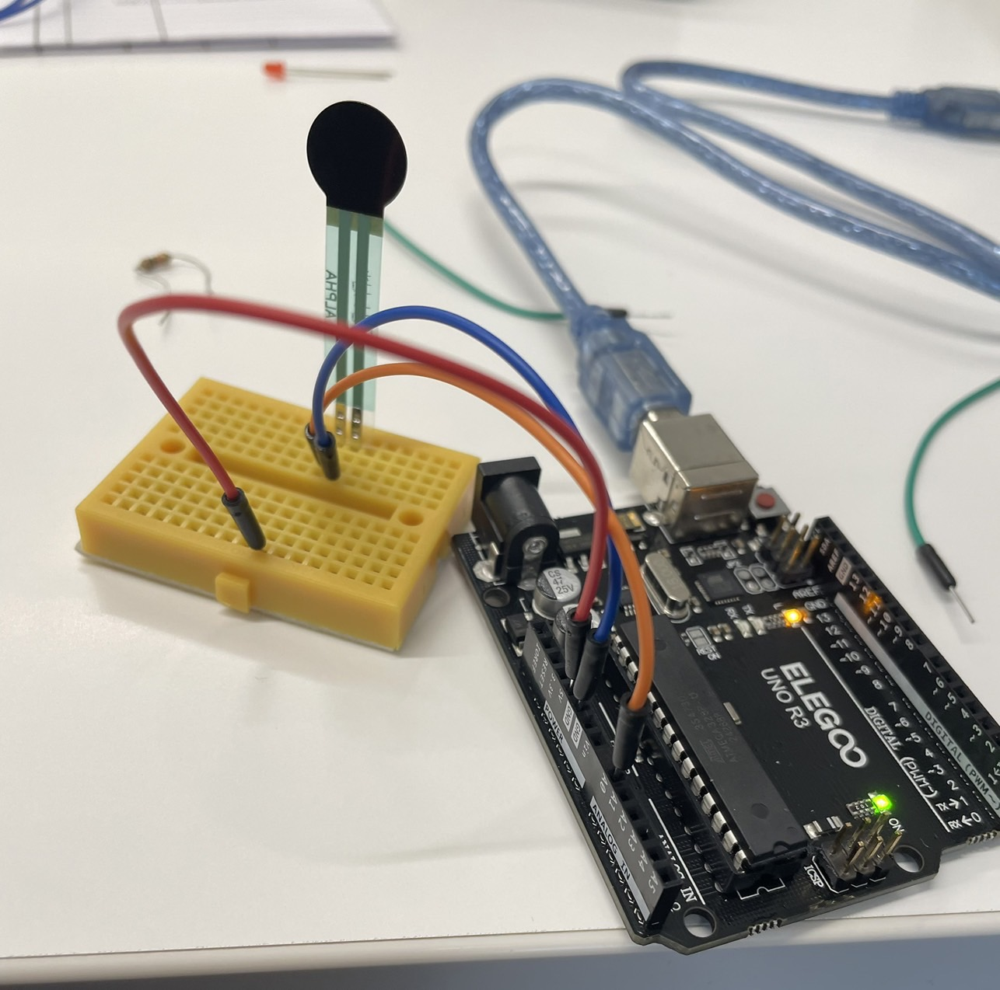
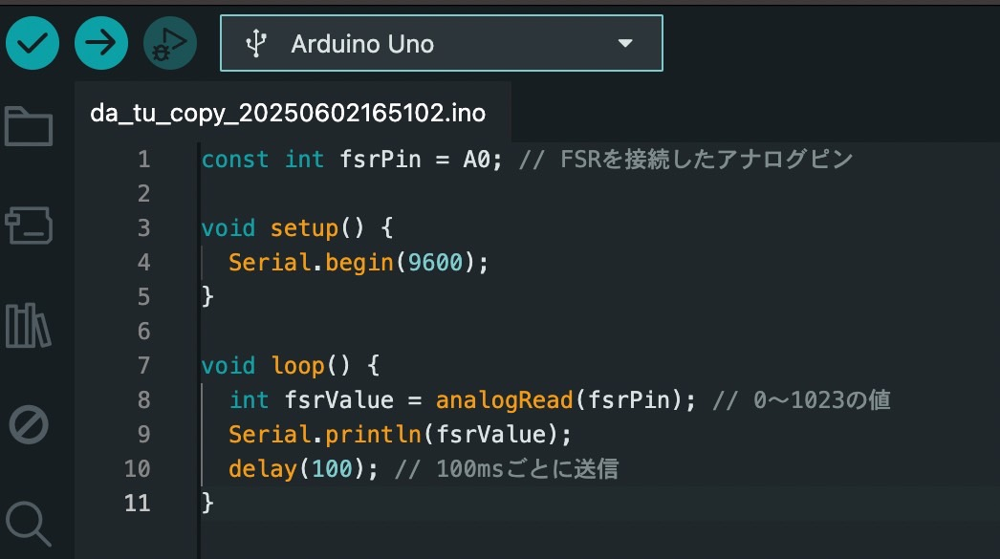

Project note
イメージ

概要
エアガンで射撃してポイントを稼ぐゲームを作成する
ダーツ形式でエアガン射撃をする形にしたい
獲得したポイントを、ゲーム終了後にQRコードを読み取ることでポイントを確認できるものを作成したい
プロセスメモ
■は考えること
●は具体的にやること
→実際にやったこと
■IoTをどういう形で取り入れるか
：■IoTはどうする？
●射撃で獲得できた点数をQRコードを読み取ることで表示する
■的はどうする？
：■的の材料はどうする？
→MDF（2.5mm）が加工もしやすくて良さそう
→

きれいに印刷された
この裏にセンサーをつけて衝撃を感知させる
■衝撃はどうやって感知する？
：■衝撃を感知するセンサーはあるか？
→圧力を感知するセンサーがあった＋買った（1個300円、、、ちと高い、、、？）
●センサーを配線しやすいようにはんだ付け
→はんだ付けうまくいかなかった、、、出直し、、（センサーの2/4が退場）
→いったん、どんな配線になるのか試し↓

※買ったセンサーの反応が思ったよりも鈍いことが判明
思っていた感じと全然違う
この後に追加のセンサーを買ったが、センサーの反応が心配だったためAmazonで圧力センサーを探した
そうしたら思い描いていたものにとても近いもっと感度が高いセンサーが見つかった
追加注文を取り消し、まさかの返品する事態に（全額ではないが返金もされた）
●もっと感度が高いセンサーを探す
→Amazonで良さげなピエゾ素子センサーと呼ばれるものを発見＋購入（右がセンサー）
初期状態のままでは導線が短く、配線がしずらかったため延長のはんだ付けをした
→配線しやすいようにはんだ付け

延長はしたが、配線を考えてもっと長さが欲しい
ここからさらに的への配線がしやすいように延長のはんだ付けを遂行
先端にはブレッドボードに刺しやすいようにピンのはんだ付けも
Arduino
●Arduinoとpythonのコードを作成する
→Chan-ManaがChatGPTを駆使しコードを作成

プログラムでゲームの制限時間を設定し”start”を入力することで、制限時間内の範囲でセンサーが起動
ゲームの後、表示されたQRコードを読み取ることでポイントの確認が行える
配線＆動作確認
いったん作成した的とセンサーを配線する
→


ブレッドボードは大きいものを購入
配線は今にも絡まりそうだけど、なんとかうまくつながった（ありがとう）
そして動作確認を実行
しかし動作は思ったものにはならず、一個づつ反応させたいセンサーが二個，三個と一気に反応をしてしまった
改めて的について考え直す必要になった
テーマ変更
当初の計画としては、的を印刷した一枚のボード内で点数を計測するものを予定していたが
一枚板の受けた衝撃を特定のセンサーに感知させることが至難だと、予想はしていたが判明した
着弾した場所と離れた場所にあるセンサーが感知してしまった
残りの時間も考慮し、このままでいくのは現実的ではないため路線を変更することに
■どう路線変更するか
ダーツ形式ではなく、射的の形式なら一つの的に一つのセンサーになるから実現できそう
→テーマを変更し、射的形式でテーマを再設定
再度的の印刷＋的の土台作成
●再度的のデザインを印刷
射的要素を考えて打ちたくなるような良い感じのデザインにしたい
宇宙人のイラストを作成し、複数枚を印刷する
→的を印刷
キモイな、、、
いや、なんとも打ちたくなるような良いデザインになった
■的の土台の作成
複数個の的を使用するため、それに対応した数の土台が必要になった
3Dプリンターが土台の作成に適していると考えた
→印刷

3Dプリンター印刷うまくいった
配線収納
■配線をどうまとめるか
的同士を離して設置する関係から配線が長くなりごちゃごちゃに
このごちゃごちゃ配線をまとめたい
●箱を作ってその中に組み込む
→

配線むき出しにすると、野暮ったい感じが出てそれはそれでいいかもしれないが
なんとも見栄えが悪くなってしまう
配線をまとめながら、透明になっている側面から状況が分かるように設計してくれた
現代アートみたいな箱（設計士やまの賜物）
最終組み立て＆配線
●箱の中に配線を組む
作成した配線収納箱の中に配線を組み込んでいく
→めちゃ良いかたちに
配線の全体像
動画撮影
今回の動画撮影を行うにあたってメンバーのChan-Manaとやまの車を使った動画を撮影した
車がとても良い演出になったと感じている
セット設営
撮影環境を貸していただいたChan-Manaのおばあちゃんの家に大きな感謝を
完成
P.S
今回の最終課題制作にはChan-Manaとやまが引き込んでくれた
二人の発想力や想像力、作業が行き詰ったときの転換のおかげでなんとか最終課題を形にすることができた
本当にありがとう（Thanks）